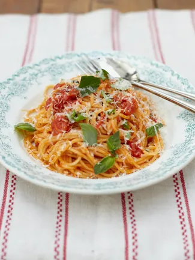

home
Tomato Spaghetti

What is spaghetti?
Spaghetti is a long, thin, solid, cylindrical pasta. It is a staple food of traditional Italian cuisine.
Like other pasta, spaghetti is made of milled wheat, water, and sometimes enriched with vitamins and minerals.
Italian spaghetti is typically made from durum-wheat semolina. Usually the pasta is white because refined flour is used,
but whole wheat flour may be added.
Ingredients:
- 1 bunch of fresh basil.
- 1 medium onion.
- 2 cloves of garlic.
- 1 kg ripe tomatoes , or 2 x 400g tins of quality chopped tomatoes.
- Olive oil.
- 1 tablespoon red wine or balsamic vinegar
- 480 g dried wholewheat spaghetti
- 15 g Parmesan cheese
Preparation:
- Pick the basil leaves onto a chopping board (reserving a few baby leaves to garnish),
then roughly chop the remaining leaves and finely chop the stalks.
- Peel and finely slice the onion and garlic. If using fresh, cut the tomatoes in half,
then roughly chop them or carefully open the tins of tomatoes.
- Put a saucepan on a medium heat and add 1 tablespoon of olive oil and the onion, then
cook for around 7 minutes, or until soft and lightly golden.
- Stir in the garlic and basil stalks for a few minutes, then add the fresh or tinned tomatoes and the vinegar.
- Season with a tiny pinch of salt and pepper, then continue cooking for around 15 minutes, stirring occasionally.
- Stir in the chopped basil leaves, then reduce to low and leave to tick away. Meanwhile…
- Carefully fill a large pot three-quarters of the way up with boiling water,
add a tiny pinch of salt and bring back to the boil.
- Add the spaghetti and cook according to packet instructions – you want to cook
your pasta until it is al dente. This translates as ‘to the tooth’ and means that
it should be soft enough to eat, but still have a bit of a bite and firmness to it.
Use the timings on the packet instructions as a guide, but try some just before the time
is up to make sure it’s perfectly cooked.
- Once the pasta is done, ladle out and reserve a cup of the cooking water and keep it to one
side, then drain in a colander over the sink and tip the spaghetti back into the pot.
- Stir the spaghetti into the sauce, adding a splash of the pasta water to loosen, if needed.
- Serve with the reserved basil leaves sprinkled over the top and use a micro-plane to finely
grate the Parmesan cheese, then sprinkle over.